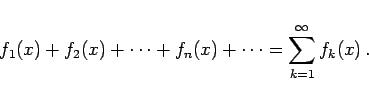
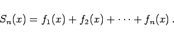
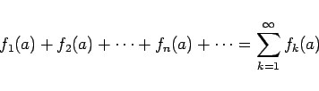
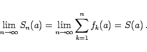

wird eine Reihe genannt, deren Glieder Funktionen ein und derselben Variablen x sind:

(7.67)
2. Partialsumme
Sn(x) heißt die Summe der ersten n Glieder der Reihe (7.67):

(7.68)
3. Konvergenzbereich
der Funktionenreihe (7.67) werden sämtliche Werte x = a genannt, die zum gemeinsamen Definitionsbereich aller Funktionen fn(x) gehören und für die die Reihen mit konstanten Gliedern

(7.69)
konvergieren, d.h. für die der Grenzwert der Partialsummen Sn(a) existiert:

(7.70)
Die Funktion S(x) heißt Summe der Reihe (7.67), und man sagt, die Reihe konvergiert gegen die Funktion S(x).
4. Restglied
Rn(x) heißt die Differenz zwischen der Summe S(x) einer konvergenten Funktionenreihe und ihrer Partialsumme Sn(x):